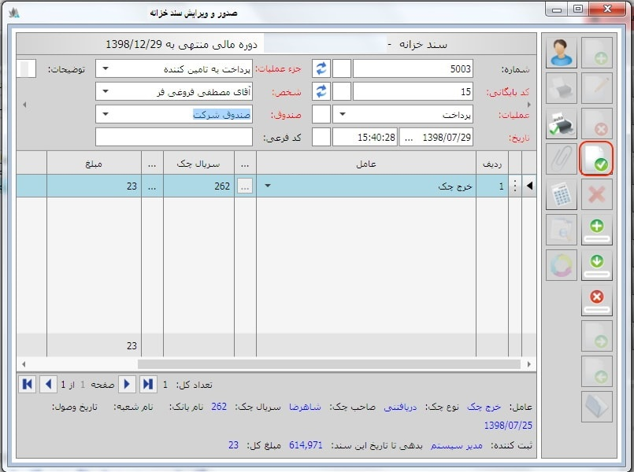
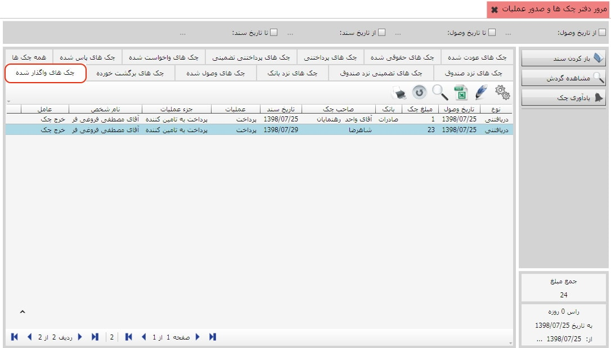

در این بخش شما می توانید لیستی از همه ی چکها اعم از دریافتی و پرداختی به تفکیک نوع عملیات در اختیار داشته باشید، می توانید با انتخاب تب عملیات مورد نظر و مشاهده ی لیست چکهای مربوطه بر روی آنها عملیاتی را انجام دهید روی گزینه «مرور دفتر چک ها و صدور عملیات» کلیک کنید تا صفحه مربوط به آن باز شود:

کادر شماره 1:
در کادر شماره ی یک شما می توانید فیلتر هایی نظیر تاریخ وصول و تاریخ سند اعمال کنید
که در این صورت سیستم تنها چکهایی را نمایش خواهد داد که در بازه ی زمانی تعیین شده
در تاریخ وصول یا تاریخ سند می باشند.
کادر شماره 2:
در این کادر تبهایی را مشاهده می کنید که اگر بر روی هر یک کلیک کنید سیستم فقط چکهای
مربوط به تب انتخاب شده را نمایش می دهد، در تصویر بالا تب چکهای نزد صندوق انتخاب شده است.
کادر شماره 3:
در این کادر کلید هایی نظیر باز کردن سند، مشاهده ی گردش، خرج چک، واگذار چک به صندوق و ... را
مشاهده می کنید، باید توجه داشته باشید که تعداد این کلید ها با توجه به تبی که از کادر شماره ی دو
انتخاب می کنید متفاوت است یعنی در رابطه با هر تب تنها کلید هایی نمایان می شوند که شما مجاز به
استفاده از آنها هستید، اگر بر روی هر یک از این کلید ها کلیک کنید صفحه ی صدور و ویرایش سند خزانه باز
می شود شما می توانید عملیات مورد نظر خود را بر روی چک انتخاب شده انجام دهید و یا اطلاعات مورد نیازتان را
مشاهده کنید.
کادر شماره 4:
پس از اعمال فیلتر های مورد نظر در کادر یک و انتخاب تب مد نظر از کادر شماره ی دو لیست چکهای مورد انتظار
در کادر شماره ی چهار نمایش داده می شوند، در این لیست اطلاعاتی نظیر نوع چک، تاریخ وصول، مبلغ چک، صاحب چک و ...
نیز قابل مشاهده می باشد.
در ادامه به شرح مثالی می پردازیم، برای خرج کردن یکی از چکهای صندوق
به شرح زیر عمل کنید :

ابتدا مطابق تصویر بالا از کادر شماره ی دو تب چکهای نزد صندوق را انتخاب کنید، سپس بر روی کلید خرج چک کلیک کنید، پنجره ی صدور و ویرایش سند خزانه باز می شود:
پس از تکمیل اطلاعات پنجره ی بالا کلید ثبت سند را بزنید :
همان طور که در تصویر بالا مشاهده می کنید چک از صندوق خارج و به تب چک های واگذار شده منتقل شد.